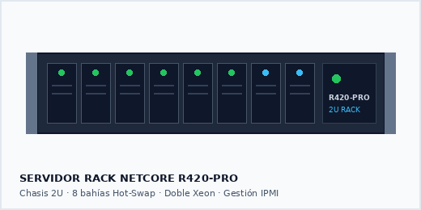

Inicio / Servidores / SERVIDOR RACK NETCORE R420-PRO
SERVIDOR RACK NETCORE R420-PRO
Servidor en formato rack 2U diseñado para armarios estándar de 19 pulgadas. Se entrega con el SERVICIO DE PRECONFIGURACIÓN EN LABORATORIO incluido: arreglo RAID montado, IP de gestión IPMI asignada y prueba de estabilidad de 24 horas.

Ficha técnica completa
| Apartado | Especificación |
|---|---|
| Procesadores | 2x Intel Xeon Silver 4410Y (12 núcleos / 24 hilos cada uno, 2.0 GHz - 3.9 GHz) |
| Memoria RAM | 128 GB DDR5-4800 ECC Registered (ampliable hasta 1 TB) |
| Controladora RAID | Controladora hardware RAID 0/1/5/6/10 con 4 GB de caché protegida por batería |
| Almacenamiento | 4x SSD Enterprise 1.92 TB configurados en RAID 10 (3.84 TB útiles) |
| Interfaces de red | 2x 10GbE SFP+ + 2x 1GbE RJ45 + 1x puerto dedicado IPMI 2.0 |
| Alimentación | Doble fuente redundante 750W 80 PLUS Platinum extraíble en caliente |
| Precio base | 2.490,00 € (IVA no incluido) |